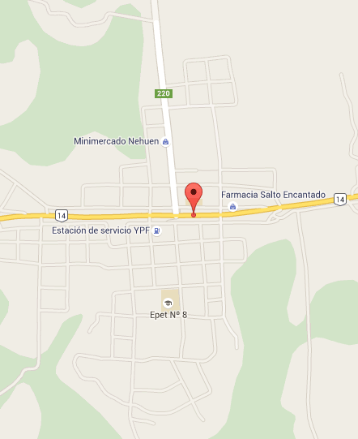

A tan solo 2 horas de las Cataratas del Iguazú, en la milenaria verde selva guaraní, en el corazón de la provincia de Misiones, una de las zonas de mas rica biodiversidad del planeta, un lugar que nos muestra su riqueza a través de sus diversas culturas, sus sabores y su infinita naturaleza.
En la Reserva Provincial del Cuña Pirú y Salto Encantado, Hotel de Selva CUÑA PIRÚ LODGE.
Emplazado en 20 hectáreas propias de selva virgen y un pequeño arroyo que lo atraviesa, con circuitos de interpretación y una múltiple oferta de relax en cada rincón.
El Hotel de Selva se encuentra internado en un ambiente privado y exclusivo de Selva, decorado con productos autóctonos, cuenta con todas las comodidades y el esmerado servicio y la calidez de personal.
Ubicado en la zona centro de la provincia, permite una rápida proyección opcional hacia otros centros turísticos de Misiones. Las Cataratas del Iguazú, Ruinas de San Ignacio y los Saltos del Moconá. Las excursiones podrán ser organizadas a solicitud.
Una experiencia excepcional en la que se combinan cultura, historia, naturaleza y este Hotel de Selva en un entorno natural único.
El lodge de selva cuenta con 4 cabañas y una capacidad total de 16 plazas, construidas al amparo de la selva en madera dura y roca basáltica con diseño bio-ambiental y tratamiento tradicional de la imagen que permite que la arquitectura se integre al paisaje.
Cada una de las habitaciones del hotel de selva cuenta con deck de extensión privada con vista a la selva donde podrá dejarse invadir por la naturaleza que lo rodea.
reservas@cunapirulodge.com
Lote 18- Villa Salto Encantado
